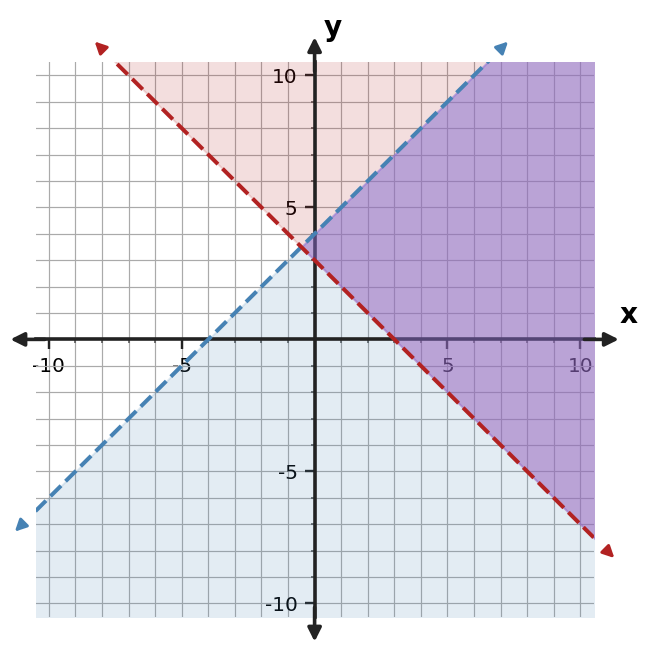
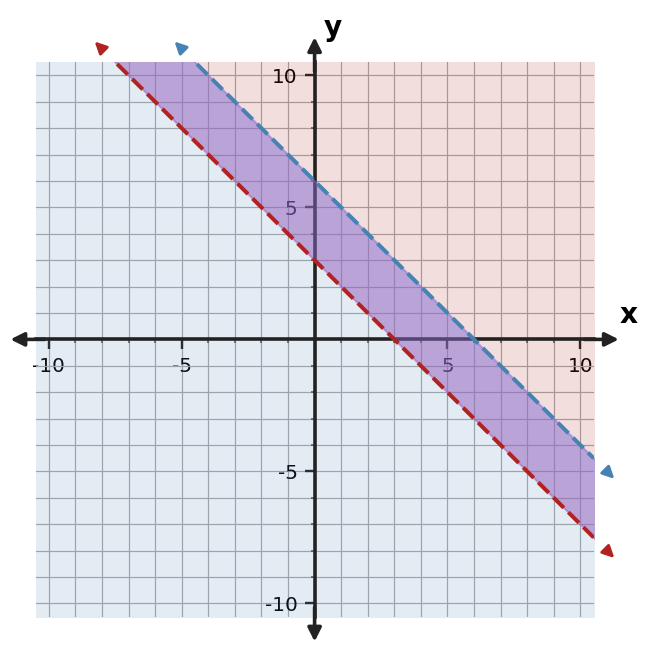
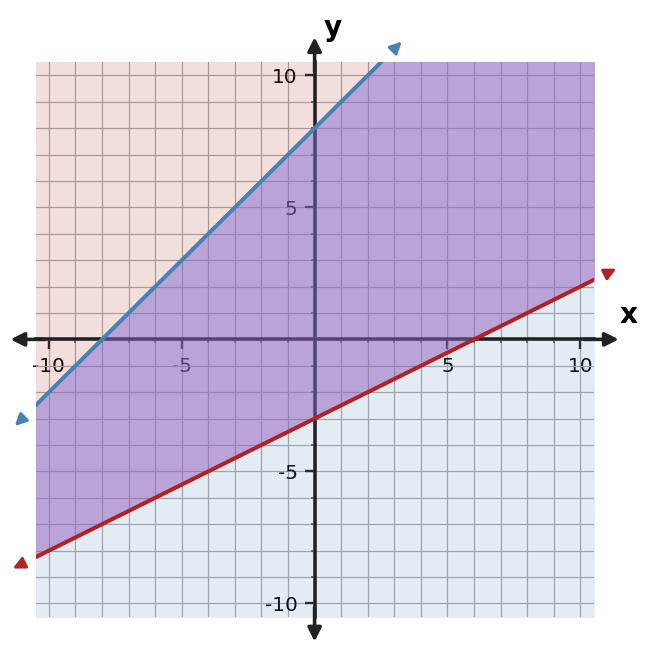
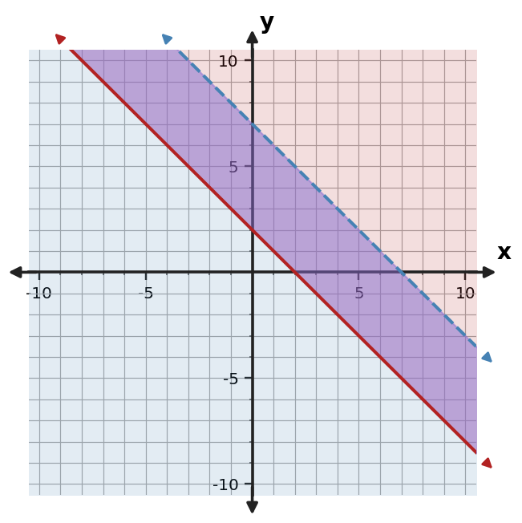

Algebra Practice 3.5 :::: Extra Practice
1. Why should a contextual feasible point also be checked against quantity restrictions such as nonnegativity?
2. Use the graph to describe the feasible region of the system. Give one point that appears feasible.

3. Determine whether $(1,3)$ is feasible for $y\le -x+5$ and $y\ge x+1$. Show both checks.
4. Use the table to identify points that satisfy both $y\le -x+6$ and $y\ge x$.
| Point | Constraint 1 | Constraint 2 | Feasible? |
|---|---|---|---|
| $(0,1)$ | Yes | Yes | Yes |
| $(1,3)$ | Yes | Yes | Yes |
| $(2,2)$ | Yes | Yes | Yes |
| $(4,5)$ | No | Yes | No |
5. Use the graph to describe the feasible region of the system. Give one point that appears feasible.

6. A workshop can make at most 20 small kits and large kits in total and must make at least 5 large kits. Let $x$ be small kits and $y$ be large kits. Write a system of inequalities, including nonnegativity.
7. Explain why the overlap of two shaded regions represents the feasible region.
8. Use the graph to describe the feasible region of the system. Give one point that appears feasible.

9. Determine whether $(1,3)$ is feasible for $y\le 2x+4$ and $y\ge 0.5x$. Show both checks.
10. Use the table to identify points that satisfy both $y\le x+8$ and $y\ge -x+1$.
| Point | Constraint 1 | Constraint 2 | Feasible |
|---|---|---|---|
| (0,-1) | Yes | No | No |
| (2,2) | Yes | Yes | Yes |
| (4,13) | No | Yes | No |
11. Use the graph to describe the feasible region of the system. Give one point that appears feasible.

12. Use the table to identify points that satisfy both $y\le x+7$ and $y\ge -x+4$.
| Point | Constraint 1 | Constraint 2 | Feasible |
|---|---|---|---|
| (0,2) | Yes | No | No |
| (2,5) | Yes | Yes | Yes |
| (4,12) | No | Yes | No |
13. A point lies on a solid boundary of one inequality and inside the other shaded region. What still must be checked?
14. Use the graph to describe the feasible region of the system. Give one point that appears feasible.

15. Determine whether $(1,10)$ is feasible for $y\le x+7$ and $y\ge -x+1$. Show both checks.
16. Use the table to identify points that satisfy both $y\le x+7$ and $y\ge 2$.
| Point | Constraint 1 | Constraint 2 | Feasible? |
|---|---|---|---|
| $(0,1)$ | Yes | No | No |
| $(1,3)$ | Yes | Yes | Yes |
| $(2,2)$ | Yes | Yes | Yes |
| $(4,5)$ | Yes | Yes | Yes |
17. Use the graph to describe the feasible region of the system. Give one point that appears feasible.

18. A workshop can make at most 24 posters and banners in total and must make at least 6 banners. Let $x$ be posters and $y$ be banners. Write a system of inequalities, including nonnegativity.
19. Why can a point in the unshaded part of either inequality not belong to the feasible region?
20. Use the graph to describe the feasible region of the system. Give one point that appears feasible.

21. Determine whether $(4,13)$ is feasible for $y\le x+7$ and $y\ge -x$. Show both checks.
22. Use the table to identify points that satisfy both $y\le x+6$ and $y\ge -x+1$.
| Point | Constraint 1 | Constraint 2 | Feasible |
|---|---|---|---|
| (0,-1) | Yes | No | No |
| (2,2) | Yes | Yes | Yes |
| (4,11) | No | Yes | No |
23. Use the graph to describe the feasible region of the system. Give one point that appears feasible.

24. A workshop can make at most 30 chairs and desks in total and must make at least 8 desks. Let $x$ be chairs and $y$ be desks. Write a system of inequalities, including nonnegativity.